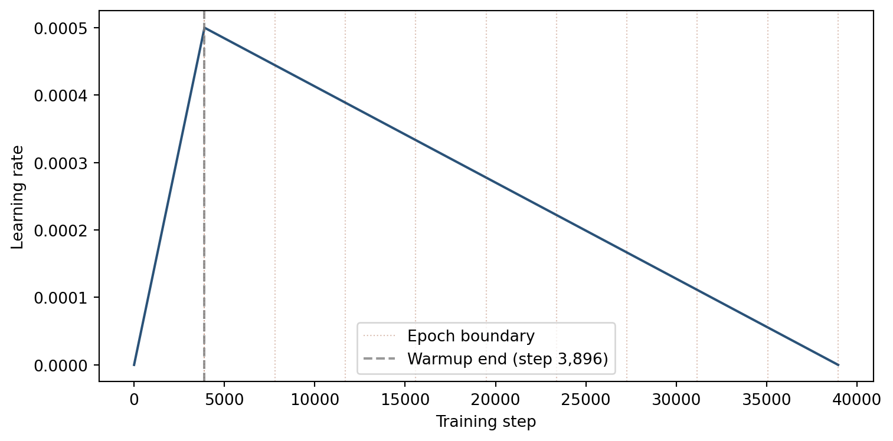
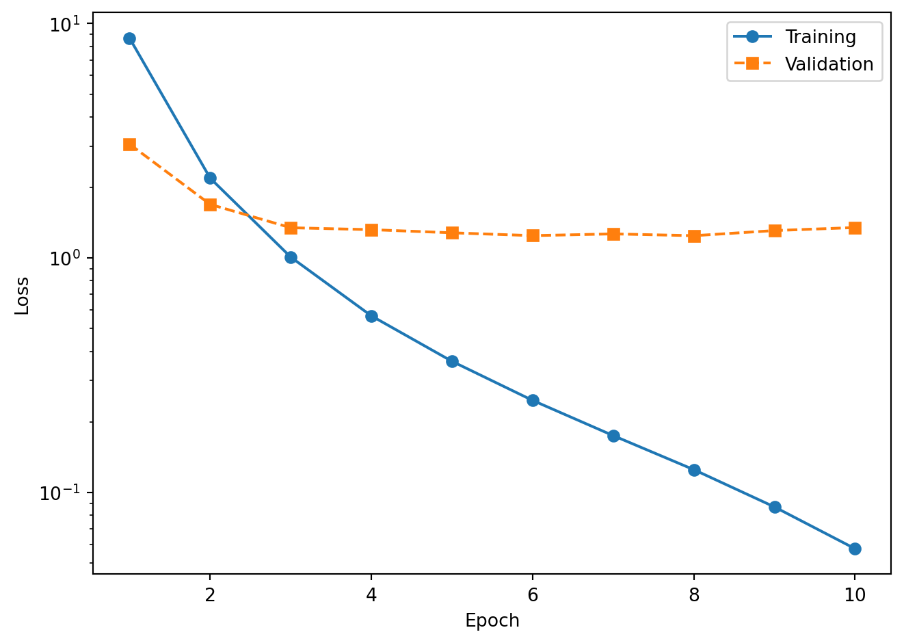
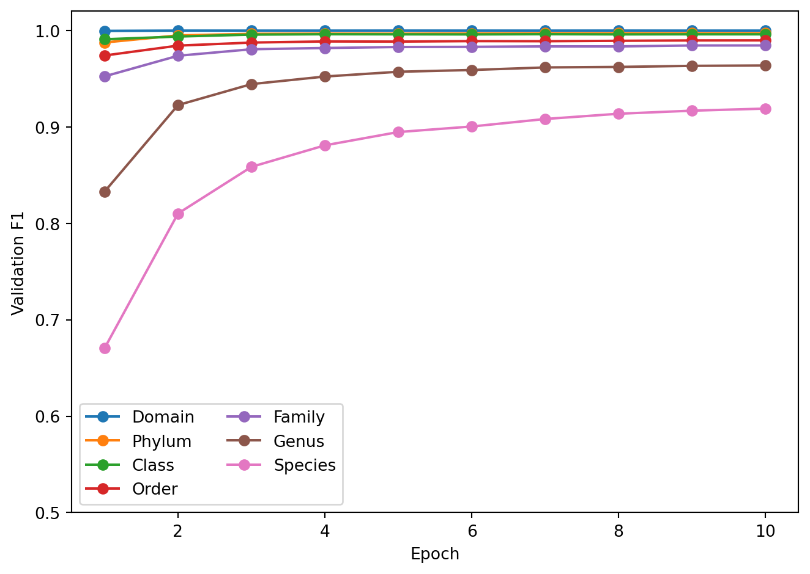

flowchart LR
A[Load Batch] --> B[Forward Pass] --> C[Compute Loss] --> D[Backpropagation] --> E[Update Weights]
E --> F{More Batches?}
F -->|Yes| A
F -->|No| G[Validate & Save Checkpoint]
G --> H{More Epochs?}
H -->|Yes| A
H -->|No| I[Done]
style A fill:#d6efe8,stroke:#1f6b4f
style G fill:#d8e4f0,stroke:#2a5278
style H fill:#e4dced,stroke:#5a3d75
style I fill:#f0e2d6,stroke:#994a2a
Training a DeepTaxa Model
Preparing data, configuring the model, and evaluating a from-scratch training run
Objective. Train a DeepTaxa classifier from scratch on 16S rRNA gene sequences, inspect the resulting checkpoints, visualize learning progress, and evaluate the trained model on a held-out test set.
Prerequisites. DeepTaxa (pip install deeptaxa-rrna), Python 3.10 or later, and PyTorch 2.4 or later. A CUDA-capable GPU is strongly recommended for training.
Inputs. The Greengenes 2 training FASTA and taxonomy (release 2024.09). Outputs. A trained checkpoint, learning curves, and per-rank evaluation on the test set. Runtime. About 2.5 hours for 10 epochs on an NVIDIA A40 GPU (roughly 14 minutes per epoch); proportionally longer on weaker hardware.
Last validated July 2026.
This tutorial demonstrates how to train DeepTaxa from scratch on 16S rRNA gene sequences, inspect the resulting model checkpoints, and visualize learning progress. By the end, you will have a trained classifier capable of assigning taxonomic labels from Domain to Species.
Training a deep neural network involves repeatedly adjusting the model’s parameters to reduce classification errors on a labeled dataset. Each pass through the full training set is called an epoch. After each epoch, the model is evaluated on a held-out validation set to monitor generalization and detect overfitting (the point at which the model begins memorizing training examples rather than learning transferable patterns).
1 Setup
The following cells configure the Python environment and verify GPU availability.
Tip
The PATH modification and GPU verification below are specific to containerized environments (e.g., Vast.ai, Docker) where the system Python differs from the virtual environment. If you are running on a local machine with CUDA already configured, skip ahead to the installation step.
# Configure PATH so bash cells find the GPU-enabled Python
import os
os.environ['PATH'] = '/venv/main/bin:' + os.environ['PATH']Verify GPU access.
import torch
print(torch.cuda.is_available())
print(torch.cuda.device_count())
print(torch.cuda.get_device_name(0) if torch.cuda.is_available() else 'No GPU')True
1
NVIDIA A40Install DeepTaxa from PyPI, along with the optional libraries for evaluation and plotting. DeepTaxa is distributed as deeptaxa-rrna; after installation the command-line tool is deeptaxa. Bioconda is an alternative for Conda-based toolchains (conda install -c bioconda deeptaxa-rrna).
%%bash
mkdir -p ~/deeptaxa-workspace
python -m pip install -q deeptaxa-rrna
python -m pip install -q matplotlib scikit-learnConfirm the installation.
%%bash
deeptaxa --versionDeepTaxa 1.3.02 Training data
DeepTaxa trains on the Greengenes 2 reference database (release 2024.09), a curated collection of full-length 16S rRNA gene sequences with standardized seven-rank taxonomy annotations. The training subset contains approximately 277,000 sequences spanning over 16,000 species.
The class distribution is highly imbalanced: some species are represented by thousands of sequences, while others have fewer than five. This imbalance is inherent to reference databases and reflects the uneven sampling of microbial diversity in culture collections and environmental surveys.
Download the training sequences and taxonomy labels from Hugging Face.
%%bash
cd ~/deeptaxa-workspace
mkdir -p data/greengenes && cd data/greengenes
test -f gg_2024_09_training.fna.gz || curl -L -O https://huggingface.co/datasets/systems-genomics-lab/greengenes/resolve/main/gg_2024_09_training.fna.gz
test -f gg_2024_09_training.tsv.gz || curl -L -O https://huggingface.co/datasets/systems-genomics-lab/greengenes/resolve/main/gg_2024_09_training.tsv.gzList the downloaded files.
%%bash
cd ~/deeptaxa-workspace && du -h data/greengenes/*25M data/greengenes/gg_2024_09_testing.fna.gz
812K data/greengenes/gg_2024_09_testing.tsv.gz
97M data/greengenes/gg_2024_09_training.fna.gz
2.7M data/greengenes/gg_2024_09_training.tsv.gzTo confirm that the downloads are intact, compare each file against its published SHA-256 checksum. Every line should report OK.
cd ~/deeptaxa-workspace/data/greengenes
cat > training_CHECKSUMS.sha256 <<'EOF'
277d990a1e476c149ba219fef69089a892e07b3271e9bc18cb7d58a0cec1214d gg_2024_09_training.fna.gz
266a90b974562e09f6467c96ce73c4ca09042ee896786aee211d08ee031ed83b gg_2024_09_training.tsv.gz
EOF
sha256sum -c training_CHECKSUMS.sha2563 Training
The training loop follows this sequence at each epoch:
The deeptaxa train command orchestrates this entire pipeline. Only --fasta-file, --taxonomy-file, and --output-dir are required; all other flags default to the compact-configuration values used in the published checkpoint.
| Flag | Purpose | Default |
|---|---|---|
--fasta-file |
Input sequences in FASTA format | (required) |
--taxonomy-file |
Tab-separated file mapping sequence IDs to taxonomy | (required) |
--output-dir |
Directory for checkpoints, metrics, and logs | (required) |
--model-type |
Architecture to use | hybridcnnbert |
--epochs |
Number of passes through the training set | 10 |
--batch-size |
Number of sequences per gradient update | 64 |
--learning-rate |
Learning rate | 5e-4 |
--seed |
Random seed for reproducibility | 42 |
--hidden-size |
Transformer hidden dimension | 896 |
--num-hidden-layers |
Number of Transformer layers | 4 |
--num-attention-heads |
Number of attention heads | 7 |
--intermediate-size |
Transformer feed-forward dimension | 3584 |
--embed-dim |
CNN embedding dimension | 896 |
--num-filters |
CNN filters per kernel size | 256 |
--kernel-sizes |
CNN kernel widths | 3 5 7 |
--num-conv-layers |
Number of CNN layers | 1 |
--hidden-dropout-prob |
Dropout probability | 0.20 |
The architecture flags and seed above match the configuration used to produce the published DeepTaxa checkpoint. For details on what each architecture parameter controls, see the architecture tutorial.
Note
Training time depends on GPU model, batch size, and data loading speed. On an NVIDIA A40, each epoch takes approximately 14 minutes (total: roughly 2.5 hours for 10 epochs). On older hardware or with smaller batch sizes, expect proportionally longer runs.
Note
During training, DeepTaxa logs per-batch progress, loss values, and validation metrics to the console. NaN gradient warnings (if they appear) are handled automatically by skipping the affected batch.
Launch the training run. The full hybrid CNN-BERT run takes about 2.5 hours, so it is shown here for reproducibility but is not executed while this page renders; the metrics and figures below come from a saved run of exactly this command.
cd ~/deeptaxa-workspace
deeptaxa train \
--fasta-file data/greengenes/gg_2024_09_training.fna.gz \
--taxonomy-file data/greengenes/gg_2024_09_training.tsv.gz \
--model-type hybridcnnbert \
--output-dir outputs/training
TipOptional quick smoke test
To confirm the command works without waiting for the full run, train a CNN-only model for a single epoch on the same data. This exercises the whole pipeline in a few minutes; it does not reproduce the published model or its reported accuracy.
deeptaxa train \
--fasta-file data/greengenes/gg_2024_09_training.fna.gz \
--taxonomy-file data/greengenes/gg_2024_09_training.tsv.gz \
--model-type cnn --epochs 1 \
--output-dir outputs/smoke_test4 Understanding training metrics
4.1 The loss function
DeepTaxa minimizes a weighted sum of cross-entropy losses, one per taxonomic rank:
\[\mathcal{L} = \sum_{r=1}^{R} w_r \cdot \text{CE}_r\]
where \(R = 7\) is the number of taxonomic ranks (Domain through Species) and \(w_r\) is the weight assigned to rank \(r\) (1.0 by default, giving equal importance to each level). Separate per-rank losses allow the model to train all seven classifiers simultaneously from a single forward pass.
For each rank \(r\), let \(\hat{y}_{i,c}^{(r)}\) denote the predicted probability for class \(c\) at rank \(r\) (the softmax output), and let \(y_i\) be the index of the true class for sequence \(i\). The cross-entropy at rank \(r\) is:
\[\text{CE}_r = -\frac{1}{N} \sum_{i=1}^{N} \log \hat{y}_{i,\, y_i}^{(r)}\]
where \(N\) is the number of sequences in the batch. The subscript \(y_i\) selects the predicted probability assigned to the correct class: the loss is large when the model assigns low probability to the correct answer and approaches zero as that probability approaches 1.0.
Note
DeepTaxa also supports focal loss (--loss-type focal), which down-weights well-classified examples and concentrates gradient updates on harder cases. This is particularly useful when the training data are highly imbalanced across classes. See the architecture tutorial for details.
4.2 Learning rate schedule
Training uses a linear warmup-and-decay schedule: the learning rate increases linearly from zero to the base rate over the first 10% of steps (warmup), then decreases linearly back to zero over the remaining 90% (decay). Warmup prevents early instability: the classification heads start from random weights and initially produce large, noisy gradients that would destabilize training if the full learning rate were applied immediately.
# --- Learning rate schedule ---
import numpy as np
import matplotlib.pyplot as plt
n_epochs = 10
batch_size = 64
lr_base = 5e-4
warmup_ratio = 0.1
n_train = int(277_000 * (1 - 0.1)) # approximate after 10% validation split
steps_per_epoch = int(np.ceil(n_train / batch_size))
total_steps = n_epochs * steps_per_epoch
warmup_steps = int(total_steps * warmup_ratio)
steps = np.arange(total_steps + 1)
lr = np.where(
steps <= warmup_steps,
lr_base * (steps / warmup_steps),
lr_base * (1 - (steps - warmup_steps) / (total_steps - warmup_steps))
)
plt.figure(figsize=(8, 4))
plt.plot(steps, lr, color='#2a5278', linewidth=1.5)
for e in range(1, n_epochs + 1):
plt.axvline(steps_per_epoch * e, color='#994a2a', linestyle=':', alpha=0.35, linewidth=0.8)
plt.axvline(steps_per_epoch, color='#994a2a', linestyle=':', alpha=0.35,
linewidth=0.8, label='Epoch boundary')
plt.axvline(warmup_steps, color='gray', linestyle='--', alpha=0.8,
label=f'Warmup end (step {warmup_steps:,})')
plt.xlabel('Training step')
plt.ylabel('Learning rate')
plt.legend()
plt.tight_layout()
plt.show()
4.3 Interpreting learning curves
Plotting training loss and validation loss over epochs reveals the model’s learning trajectory:
- Both decreasing: the model is learning and generalizing to unseen data.
- Training loss decreasing, validation loss increasing: the model is overfitting to the training data.
- Both plateauing: the model has converged. Additional epochs are unlikely to improve performance.
Load the per-epoch metrics from the JSON files saved during training.
# --- Load training metrics ---
import os
os.chdir(os.path.expanduser('~/deeptaxa-workspace'))
import json, glob, numpy as np, matplotlib.pyplot as plt
files = sorted(glob.glob('outputs/training/metrics/*epoch*.json'))
epochs, train_loss, val_loss = [], [], []
f1_data = {r: [] for r in range(7)}
for path in files:
with open(path) as fh:
d = json.load(fh)
epochs.append(d['model_details']['current_epoch'])
train_loss.append(d['performance_metrics']['training_loss'])
val_loss.append(d['performance_metrics']['validation_loss'])
for r in range(7):
f1_data[r].append(d['performance_metrics']['validation_metrics'][str(r)]['f1_score'])
# Sort by epoch number
order = np.argsort(epochs)
epochs = [epochs[i] for i in order]
train_loss = [train_loss[i] for i in order]
val_loss = [val_loss[i] for i in order]
for r in range(7):
f1_data[r] = [f1_data[r][i] for i in order]
print('Loaded metrics for', len(epochs), 'epochs')Loaded metrics for 10 epochs4.4 Training and validation loss
The logarithmic y-axis makes it easier to see the rate of improvement. Training loss decreases steadily as the optimizer adjusts the model weights. Validation loss should track the training loss; a widening gap between the two is the classic signature of overfitting.
Plot the loss curves.
# --- Loss curves ---
plt.figure()
plt.plot(epochs, train_loss, 'o-', label='Training')
plt.plot(epochs, val_loss, 's--', label='Validation')
plt.xlabel('Epoch')
plt.ylabel('Loss')
plt.yscale('log')
plt.legend()
plt.tight_layout()
plt.show()
The training loss drops rapidly in the first few epochs and continues to decrease throughout. The validation loss follows a similar trajectory but flattens earlier as the model begins to overfit. The widening gap between the two curves at later epochs is the classic signature of overfitting, and it is precisely this signal that helps identify the best checkpoint (the epoch with the lowest validation loss).
4.5 Validation F1-score by taxonomic rank
The F1-score balances precision (fraction of predicted positives that are correct) and recall (fraction of true positives that are detected):
\[F_1 = 2 \cdot \frac{\text{Precision} \cdot \text{Recall}}{\text{Precision} + \text{Recall}}\]
The denominator is the harmonic mean rather than the arithmetic mean, which ensures that a low value in either precision or recall strongly depresses the score. A classifier that achieves 90% precision but only 10% recall gets an \(F_1\) of 0.18, not 0.50.
Higher taxonomic ranks (Domain, Phylum) converge within the first epoch because the model needs to learn only a small number of coarse-grained distinctions. Lower ranks (Genus, Species) require more epochs to reach their peak performance because the number of classes is orders of magnitude larger and the distinguishing sequence features are more subtle. For a comparison of macro versus weighted F1 and its implications for class-imbalanced data, see the analysis tutorial.
Plot the F1 trajectory for each rank.
# --- F1 by rank ---
RANK_LABELS = ['Domain', 'Phylum', 'Class', 'Order', 'Family', 'Genus', 'Species']
plt.figure()
for r in range(7):
plt.plot(epochs, f1_data[r], 'o-', label=RANK_LABELS[r])
plt.xlabel('Epoch')
plt.ylabel('Validation F1')
plt.ylim(0.5, 1.02)
plt.legend(ncol=2)
plt.tight_layout()
plt.show()
The plot shows rapid convergence at Domain through Order (above 0.98 by epoch 2) and a more gradual climb at Genus and Species. The Species F1 curve is the one to watch: it reflects the model’s ability to resolve the finest-grained taxonomic distinctions, which is the most challenging and practically relevant task.
5 Checkpoint inspection
After each evaluation epoch, DeepTaxa saves a checkpoint file (.pt) containing everything needed to resume training or run inference:
- Model weights: all learnable parameters (convolutional filters, attention matrices, classification heads), required for inference and for resuming training.
- Optimizer state: the AdamW (Loshchilov & Hutter, 2019) momentum buffers, which accumulate the running mean and variance of recent gradients for each parameter; without these, resumption restarts momentum from zero, slowing convergence.
- Scheduler state: the current position in the learning rate warmup and decay schedule; without it, the learning rate resets to its initial value rather than continuing from where training left off.
- GradScaler state: the mixed-precision loss scaling factor, which preserves numerical stability for FP16 gradients across resumed runs.
- Label encoders: the mapping between taxonomy strings (e.g., “Pseudomonadota”) and integer class indices, required to decode model output back to human-readable labels at inference time.
Inspect the epoch 10 checkpoint using the deeptaxa describe command, which summarizes the checkpoint contents without loading the full model onto a GPU.
%%bash
cd ~/deeptaxa-workspace
DEEPTAXA_UUID=$(cat outputs/training/deeptaxa_uuid.txt)
echo "Run UUID: ${DEEPTAXA_UUID}"
deeptaxa describe --checkpoint outputs/training/checkpoints/deeptaxa_${DEEPTAXA_UUID}_epoch10.ptRun UUID: 2026_07_06T00_44_23_1a2ac4db_c74a_4296_a156_b39de4d3cace2026-07-07 21:04:25,298 - INFO -
======================================================================
DeepTaxa Model Description (v1.3.0)
--------------------------------------------------
Checkpoint: outputs/training/checkpoints/deeptaxa_2026_07_06T00_44_23_1a2ac4db_c74a_4296_a156_b39de4d3cace_epoch10.pt
Timestamp: 2026-07-07T21:04:25.298456
======================================================================
Model Details:
--------------------------------------------------
run-uuid: 2026_07_06T00_44_23_1a2ac4db_c74a_4296_a156_b39de4d3cace
model-type: hybridcnnbert
tokenizer: zhihan1996/DNABERT-2-117M
epoch: 10
total-parameters: 76,365,205
max-length: 512
embed-dim: 896
num-filters: 256
kernel-sizes: [3, 5, 7]
num-conv-layers: 1
hidden-size: 896
num-hidden-layers: 4
num-attention-heads: 7
intermediate-size: 3,584
output-attentions: 0
hidden-dropout-prob: 0.2
Training Hyperparameters:
--------------------------------------------------
learning-rate: 0.0005
batch-size: 64
target-epochs: 10
focal-gamma: 2.0
level-weights: [1.0, 1.0, 1.0, 1.0, 1.0, 1.0, 1.0]
optimizer: {'lr': 0.0005, 'betas': [0.9, 0.999], 'eps': 1e-08, 'weight_decay': 0.01}
scheduler-steps: 34,670
Dataset Info:
--------------------------------------------------
total-sequences: 277,336
training: 221,868
validation: 55,468
fasta-file: /work/deeptaxa-data/greengenes/gg_2024_09_training.fna.gz
taxonomy-file: /work/deeptaxa-data/greengenes/gg_2024_09_training.tsv.gz
Taxonomic Levels:
--------------------------------------------------
Level 0 - domain: 2 labels
Level 1 - phylum: 129 labels
Level 2 - class: 349 labels
Level 3 - order: 997 labels
Level 4 - family: 2250 labels
Level 5 - genus: 7287 labels
Level 6 - species: 16909 labels
Timing:
--------------------------------------------------
training-time: 868.43496 seconds
evaluation-time: 57.045128 seconds
System Info:
--------------------------------------------------
cuda: Available
gpu: NVIDIA A40The output shows the model architecture, parameter counts, training epoch, and the taxonomic ranks with their class counts. This information is useful for verifying that the checkpoint matches the expected configuration before using it for prediction.
6 Prediction on the test set
Download the test data and run prediction using the epoch 10 checkpoint.
%%bash
cd ~/deeptaxa-workspace
DEEPTAXA_UUID=$(cat outputs/training/deeptaxa_uuid.txt)
CHECKPOINT=outputs/training/checkpoints/deeptaxa_${DEEPTAXA_UUID}_epoch10.pt
test -f data/greengenes/gg_2024_09_testing.fna.gz || curl -L -o data/greengenes/gg_2024_09_testing.fna.gz https://huggingface.co/datasets/systems-genomics-lab/greengenes/resolve/main/gg_2024_09_testing.fna.gz
test -f data/greengenes/gg_2024_09_testing.tsv.gz || curl -L -o data/greengenes/gg_2024_09_testing.tsv.gz https://huggingface.co/datasets/systems-genomics-lab/greengenes/resolve/main/gg_2024_09_testing.tsv.gz
deeptaxa predict --fasta-file data/greengenes/gg_2024_09_testing.fna.gz --taxonomy-file data/greengenes/gg_2024_09_testing.tsv.gz --checkpoint $CHECKPOINT --tabular --output-dir outputs/workflow_predictionsPrint the per-rank accuracy on the test set to see how the trained model performs.
# --- Test set accuracy ---
import os
os.chdir(os.path.expanduser('~/deeptaxa-workspace'))
import pandas as pd
from sklearn.metrics import accuracy_score, f1_score
RANKS = ['domain', 'phylum', 'class', 'order', 'family', 'genus', 'species']
pred_files = sorted(glob.glob('outputs/workflow_predictions/*_predictions.tsv'))
test_df = pd.read_csv(pred_files[0], sep='\t')
print(f'Test sequences: {len(test_df):,}')
print()
print(f'{"Rank":8s} {"Accuracy":>8s} {"Weighted F1":>11s}')
print('-' * 31)
for r in RANKS:
acc = accuracy_score(test_df[f'{r}_true'], test_df[f'{r}_predicted'])
f1 = f1_score(test_df[f'{r}_true'], test_df[f'{r}_predicted'], average='weighted', zero_division=0)
print(f' {r.capitalize():8s} {acc:8.4f} {f1:11.4f}')Test sequences: 69,335
Rank Accuracy Weighted F1
-------------------------------
Domain 0.9998 0.9998
Phylum 0.9969 0.9967
Class 0.9963 0.9959
Order 0.9904 0.9893
Family 0.9861 0.9842
Genus 0.9686 0.9641
Species 0.9298 0.92137 Summary
This tutorial covered the full training lifecycle: preparing data, configuring and launching a training run, inspecting checkpoints, interpreting loss curves and per-rank F1 trajectories, and evaluating the trained model on held-out test data.
The training run demonstrated here follows the same procedure, data, seed, and architecture used to produce the published DeepTaxa checkpoints (10 epochs on the full Greengenes dataset). The v2 release trains this configuration under five seeds; its five-seed mean is 92.95% species-level accuracy and a weighted F1-score of 0.9208.
For prediction with the published pre-trained model, see the prediction tutorial. For in-depth analysis of model behavior, see the analysis tutorial.